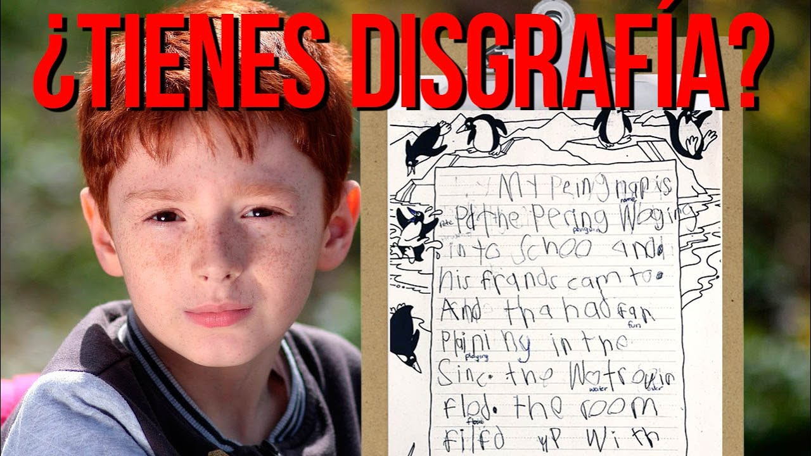
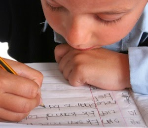
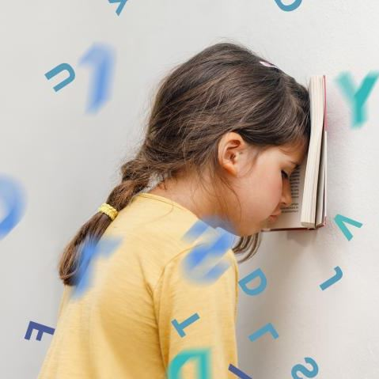

Disfrafía
La disgrafía es un trastorno neurológico de carácter funcional, se conoce como disgrafía el fenómeno por el cual una persona (normalmente un niño o una niña) presenta serias dificultades para escribir bien, ya sea por cuestiones de ortografía, caligrafía o ambos tipos de problemas a la vez. Estas dificultades deben cruzar el límite de lo que se considera patológico, a través de criterios tenidos en cuenta por el profesional que lleva a cabo el diagnóstico.
Se estima que alrededor de un 3% de los niños y niñas presenta unos problemas para cumplir las normas ortográficas que pueden considerarse casos de disgrafía.
La disgrafía afecta a varios aspectos de la capacidad de escribir. Sin embargo, más allá de todas estas variaciones, los casos de disgrafía pueden ser clasificados en dos tipos principales, según las características de las dificultades al escribir

Disortografía
Consiste en la presencia de problemas significativos en el aprendizaje de las normas de ortografía en la práctica de la escritura.
Disortografía Motora
Esta forma de disgrafía tiene que ver con los problemas de postura, coordinación e integración entre movimientos e información visual en lo que se refiere a la escritura.
Causas
Dificultades motricesDificultad en el movimiento, tanto de dedos como de las manos, y dificultades en el equilibrio y la organización general del cuerpo. |
Factores de personalidadCausas relacionadas con la personalidad y las características de la persona que padece la disgrafía, por ejemplo, si la persona es rápida o lenta. |
||
|
 |
Causas pedagógicasExisten causas relacionadas con la educación recibida en relación a la escritura, como por ejemplo, haber estado sometido a una enseñanza rígida y no adaptada a las diferencias individuales de cada alumno, someterse a exigencias marcadas por el profesor, la familia y la presión social entre compañeros como escribir bien y rápido, entre otros. |
Dificultades en la habilidad viso-perceptivaProblemas para identificar aquello que se ve. Por ejemplo, dificultades para interpretar qué es una pelota cuando la persona la tiene delante o la ve en una fotografía. |
|
|---|---|---|---|
Dificultades para retener una palabra en la memoriaDificultades en la capacidad de recuperar una palabra que se supone que deberíamos retener en la memoria. |
 |
Coordinación viso-motrizDificultades en la habilidad de coordinar el movimiento del cuerpo con la visión. |
Características de la disgrafía
La principal característica de la disgrafía es la inexistencia de trastorno neurológico o intelectual que sea lo suficiente importante como para justificar el trastorno. En el caso de que existiese algún problema de este tipo, entonces se trataría de algún tipo de discapacidad física o intelectual, pero no se le consideraría disgrafía. Otras de las características que definen este trastorno son:
Punto 1
Se manifiesta a través de una serie de síntomas que aparecen desde el inicio de la escolarización y van en aumento a medida que avanza la escolarización inicial.
Punto 2
Desde el inicio de la etapa escolar a los niños con disgrafía les cuesta mucho esfuerzo escribir y lo hacen más despacio que la media de la clase.
Punto 3
Se percibe en los niños una notable rigidez motora o, por el contrario, excesiva laxitud.
Punto 4
Los trazos no se mantienen uniformes, sino que varían constantemente.
Punto 5
Distinto tamaño en palabras y letras, incluso en el mismo párrafo.
Punto 6
Los movimientos para escribir suelen ser lentos, tensos y rígidos.
Punto 7
Dificultades para organizar las letras dentro de la palabra o frase.
Punto 8
Falta de control en la presión del lápiz, bolígrafo u otro instrumento de escritura.
Consecuencias para el aprendizaje
Como ocurre con la lectura, la escritura es una competencia básica, por lo que, al no poder realizarla correctamente, estos niños pueden sufrir un descenso significativo en el ritmo de aprendizaje respecto a la media de la clase. Además, su capacidad de comunicación con los profesores y de resolución de los ejercicios y actividades académicas diarias queda seriamente mermada al no poder expresarse adecuadamente a nivel escrito.
Por otro lado, el niño se fatiga mucho más que el resto de la clase, puesto que escribir supone un gran sobre esfuerzo para él. lo que le conduce a falta de atención e imposibilidad de seguir el ritmo escolar. El cansancio y la frustración por no poder controlar el tamaño de las letras, algo que resulta muy sencillo para la mayoría de sus compañeros, suele provocar en el niño una consecuencia aún más negativa: frustración por no poder seguir los requerimientos de la clase en el ámbito de la escritura que puede desembocar en un creciente desinterés y rechazo por los estudios.
Tratamiento en el Aula
Para corregir la disgrafía no es conveniente hacer que el alumno practique mucho la escritura, sino que el tratamiento ha de ir enfocado a que el niño vaya venciendo progresivamente las dificultades que le impiden una buena escritura. Se pueden realizar actividades amenas e incluso lúdicas, con el fin de recuperar la coordinación global y manual y corregir las posturas corporales y los movimientos de manos y dedos con una detección temprana y la intervención adecuada de maestros y especialistas, con el apoyo de las familias, los niños con este problema suelen superar sus dificultades de forma progresiva hasta conseguir un estilo de escritura totalmente normal.